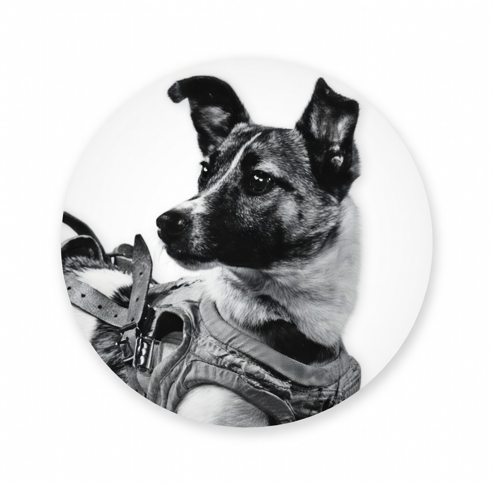

"The story didn't end in orbit. The first soul on the moon was a hero from the streets of Moscow."
Contract Address
YOUR_CONTRACT_ADDRESS_HERE
On November 3, 1957, the Soviet Union launched Sputnik 2. Inside was a three-year-old stray mongrel found on the streets of Moscow.
The Emotional Truth: Vladimir Yazdovsky, one of the lead scientists, took Laika home to play with his children before the launch. He later wrote: "I wanted to do something nice for her... she had so little time left to live."
Though she was the first to orbit the Earth, she has become the eternal symbol of courage. $LAIKA is the community's way of finishing her journey to the Moon.